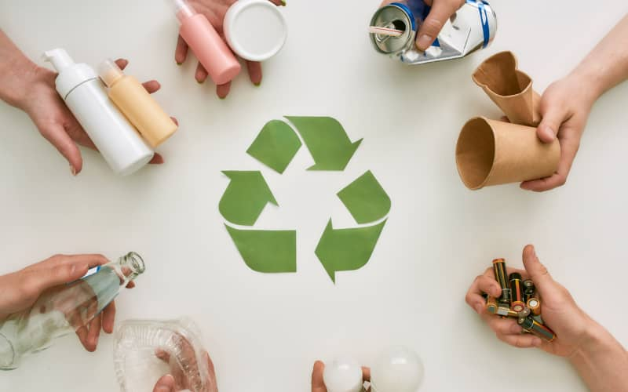

Definición
Las tres R es una regla para cuidar el medio ambiente, específicamente para reducir el volumen de residuos o basura generada. En pocas palabras, las 3r son una propuesta ecológica para fomentar hábitos de consumo responsable, basada en Reducir, Reutilizar y Reciclar.
· Reducir: consumir menos y evitar desperdicios.
Ejemplo: usar menos bolsas plásticas o ahorrar agua.
· Reutilizar: volver a usar objetos antes de botarlos.
Ejemplo: usar frascos como recipientes o reutilizar hojas por ambos lados.
· Reciclar: transformar residuos para crear nuevos productos.
Ejemplo: separar papel, vidrio y plástico para reciclaje.
